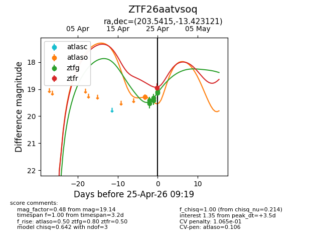
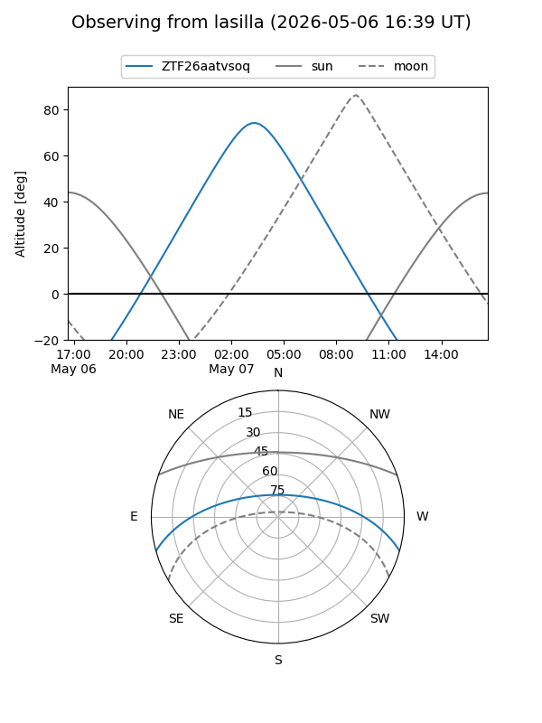
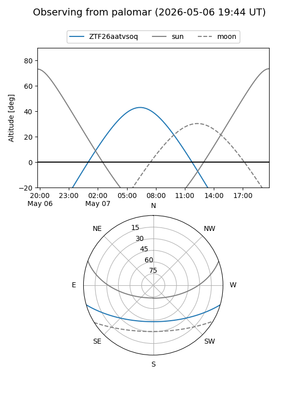
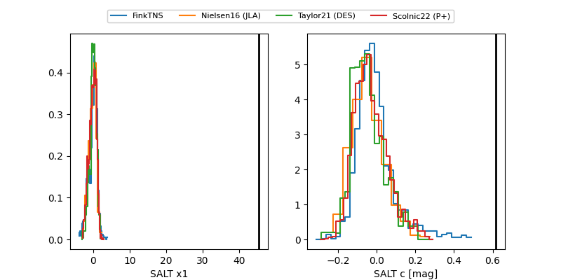

ZTF26aatvsoq
Target ZTF26aatvsoq at 2026-04-25 09:20
Aliases and brokers:
FINK: link
Lasair: link
ALeRCE: link
alt names
ZTF26aatvsoq (ztf,fink_ztf)
Coordinates:
equatorial (ra, dec) = 203.5415,-13.42312
equatorial (HMS+DMS) = 13:34:09.97,-13:25:23.24
galactic (l, b) = (318.6081,+48.14381)
Flags:
likely cv
Photometry:
last atlaso=19.30, ztfg=19.14, ztfr=18.95
1 atlaso, 6 ztfg, 1 ztfr detections
Lightcurve

Visibility


Additional plots
